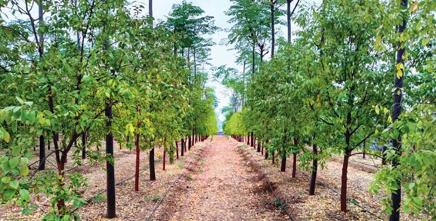

01 · FARMER FIELD
Super Napier — Baruah Farm
Green fodder cultivation (Super Napier) in a farmer’s field at Baruah Farm, Valpoi, Goa, with technical guidance from ICAR–CCARI, Goa.
I am a Senior Scientist in Agroforestry at ICAR–Central Coastal Agricultural Research Institute (ICAR–CCARI), Goa, working at the interface of agroforestry, natural resource management, climate resilience and sustainable agriculture.
My research focuses on developing scientifically robust, field-relevant land-use systems that integrate trees, crops, soils and ecological processes to address climate change, land degradation, carbon management and livelihood security.
My work increasingly integrates geospatial technologies, remote sensing, machine learning and ecosystem assessment with field-based agroforestry research to understand, map and strengthen resilient agricultural landscapes.
The overarching goal of my research is to translate ecological science into scalable, evidence-based solutions for farmers, landscapes and climate-resilient agricultural systems.
Building resilient agroecosystems requires connecting ecological science with farmers, landscapes, markets and climate solutions.
Forestry & Environmental Science · University of Agricultural Sciences, Bangalore · 2021
Agroforestry · G.B. Pant University of Agriculture & Technology, Pantnagar · 2011
Forestry · University of Agricultural Sciences, Bangalore · 2009
Senior Scientist (Agroforestry) · ICAR–CCARI, Goa
Agroforestry · Climate Resilience · Carbon · Biodiversity · Soil & Land Restoration · Geospatial Science
My research integrates agroforestry, soil science, climate resilience, carbon management, biodiversity and geospatial science to understand how trees, crops, soils and ecological processes can be designed into productive, resilient and sustainable landscapes.
Design and evaluation of tree-based farming systems integrating trees, crops, soils and ecological processes to enhance productivity, ecosystem services, climate resilience and livelihood security.
Carbon sequestration, carbon accounting, biochar-based systems and climate-smart agricultural landscapes for strengthening climate resilience and creating measurable carbon solutions.
Soil health assessment, nutrient cycling, degraded land rehabilitation and nature-based solutions for restoring ecosystem functions, improving land productivity and strengthening landscape resilience.
Tree diversity, pollination, soil fauna, litter dynamics and ecosystem services to understand how biodiversity underpins productivity, ecological functioning and resilience in multifunctional agroforestry systems.
Remote sensing, GIS, machine learning and geospatial modelling for agroforestry mapping, biomass estimation, ecosystem assessment, forest-fire susceptibility and landscape-scale decision support.
Agroforestry in coastal and saline landscapes, including Khazan lands, salinity-resilient production systems and nature-based approaches for sustainable land and resource management along the west coast of India.
Translating agroforestry research into practical, productive and climate-resilient solutions for farmers.
Integrating high-yielding fodder grasses within coconut interspaces to enhance land-use efficiency, generate additional biomass and strengthen livestock-based farming systems.
Diversifying cashew-based production systems through productive use of interspaces for fodder cultivation, biomass generation and livestock integration.
Translating improved green-fodder technologies into practical solutions for farmers through field-level technical guidance, technology dissemination and farmer adoption.
Goa faces a green-fodder shortage of up to 50%, highlighting the need for locally adapted fodder production systems.
Source: ICAR–Indian Grassland and Fodder Research Institute (IGFRI), Fodder Plan 2020.Green fodder cultivation (Super Napier) in a farmer’s field at Baruah Farm, Valpoi, Goa, with technical guidance from ICAR–CCARI, Goa.
Green fodder cultivation (CO-5) in a farmer’s field at Pernem, North Goa, with technical guidance from ICAR–CCARI, Goa.
Green fodder cultivation (Super Napier) in a farmer’s field at Netravali, South Goa, with technical guidance from ICAR–CCARI, Goa.
A living demonstration platform at ICAR–CCARI, Goa, showcasing diverse fodder resources and practical approaches for fodder cultivation, including fodder production within coconut interspaces.
The Fodder Cafeteria serves as a live demonstration and knowledge-dissemination platform, bringing diverse fodder resources together under local conditions for practical learning and awareness.
Fodder Cafeteria at ICAR–CCARI, Goa, comprising more than 35 fodder species with live demonstrations of fodder cultivation in coconut interspaces for awareness and knowledge dissemination.
When a child listens, the forest begins to speak.
A storytelling series that explores trees, forests and nature through the curious questions of a seven-year-old boy—bringing ecological knowledge closer to everyday life.
Through the eyes of a seven-year-old boy, Tree_Speaks will explore why trees matter, how forests support life, and what happens when we stop listening to nature.
Ideas, insights and stories reaching society through popular science, environmental journalism and public engagement.

India is reviving sandalwood cultivation, but its long-term success will depend on scientific management of trees alongside reforms in regulatory policies.
READ ORIGINAL ARTICLE →Newspaper and magazine features documenting the reach of scientific work beyond academic publications and into public conversations.
Selected research projects demonstrating the integration of agroforestry, climate resilience, carbon management, restoration and coastal resource management.
Principal Investigator · RKVY funded project
Principal Investigator · Forest Department, Government of Goa
Principal Investigator · Institute-funded research
Principal Investigator · Institute-funded research
Co-Principal Investigator · PMKSY / Department of Land Resources
Selected publications highlighting research contributions across agroforestry, soil health, climate resilience, carbon management, biodiversity and geospatial science.
Trees, Forests and People · 2026
View paper ↗Biomass and Bioenergy · 2026
View paper ↗Scientific Reports · 2025
View paper ↗Journal of Environmental Management · 2025
View paper ↗Frontiers in Forests and Global Change · 2024
View paper ↗Research activities span field experimentation, landscape assessment, technology development, climate solutions, restoration and farmer-oriented innovation.
Development and evaluation of multifunctional agroforestry systems across semi-arid and coastal environments.
Research connecting agroforestry, biomass, carbon sequestration, biochar and climate-resilient land management.
Application of remote sensing, GIS and machine learning to understand and map complex agricultural and forest landscapes.
Ministry of Jal Shakti, Government of India · 2024–2025
Indian Society for Agroforestry · 2024
Society for Science of Climate Change and Sustainable Environment · 2022
Department of Science & Technology, Government of India · 2020
University of Agricultural Sciences, Bangalore · 2009–10
ICAR–Central Coastal Agricultural Research Institute, Goa · 2022
Explore publications, citations and research contributions through my academic profiles.
I welcome scientific collaborations, interdisciplinary research, student interactions, knowledge exchange and initiatives focused on agroforestry, climate resilience, carbon management and sustainable natural resource use.